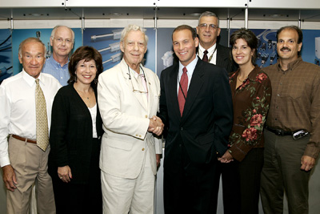
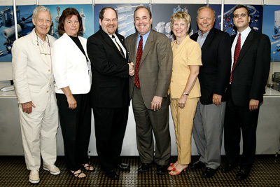

Long Island FIRST Robotics Competition featured in
Long Island Business News
2-27-04. Download article (8MB).
Press Releases
June 21, 2004
Long Island Students to Receive Scholarships Valued at $125,000
FOR IMMEDIATE RELEASE
John Zaher, PRMG
(631) 207-1057
(631) 375-8770
Fred Breithut
(631) 692-2962
November 3, 2005
Teamwork and Friendly Competition define SBPLI-LI FIRST Deer Park Invitational Preseason Event
Competition Highlights Benefits of School Robotics Programs For Students
A spirit of cooperation and teamwork permeated the gymnasium at Deer Park High School on Saturday, September 24, 2005 as robots took center court during the Deer Park Invitational, a preseason robotics competition sponsored by the School Business Partnerships of Long Island. Friendly competition coaxed problem solving skills and stellar sportsmanship from the twelve high school teams, including one team from Brooklyn, creating an engaging learning environment focused on the science of physics and the field of engineering.
In recent years, the School Business Partnership of Long Island, Inc. has held its preseason LI FIRST robotics competition at the Long Island Business and Technology Center in Great River. This year, that event was supplanted by the Deer Park Invitational, which was designed and implemented to showcase the benefits of robotics programs on students, schools and their communities. Participating teams utilized the robots they built for the 2005 regional competition, held at Hofstra University in March. Students navigated their robots to place tetrahedrons (polyhedrons with four faces) onto triangular goals, participating in qualifying rounds during the morning, followed by elimination rounds in the afternoon.
Residents, teachers and administrators from Deer Park and other Long Island school districts attended the event which included many matches featuring rookie drivers preparing for the 2006 regional competition. So inspired by the event's success Deer Park Superintendent Richard Organisciak has pledged future support for the program.
The final round, to determine the best two out of three, proved very exciting as each alliance had taken a match.
The Invitational Winner was the alliance of teams from Miller Place, Hauppauge and Brooklyn. The Invitational Finalist was \the alliance of teams from Deer Park, Plainview-Old Bethpage, and Miller Place.
The fledgling teams from Freeport and Comsewogue competed in matches with robots from Plainview-Old Bethpage and Miller Place respectively.
"We planned this event not only as a competition about the design and building of sophisticated robots, but as an opportunity to create an atmosphere whereby students can also develop maturity, professionalism, teamwork and mentoring skills, thereby enriching their lives. We were not disappointed," said Fred Breithut, founder of School-Business Partnerships of Long Island, Inc. "More than once during this competition every team exhibited what one spectator termed as "gracious professionalism", with one team even going do far as to spend precious time trying to right the toppled robot of a competing team."
"It was wonderful to have been able to provide an opportunity to include rookie teams, giving them a chance to gain practical experience, while competing with veteran teams, "said Janet Anderson, director of the LI FIRST robotics program. She continued, "It is always our hope that students will be inspired to turn their affinity for science and math into a career path, leading them to study engineering, technology or science in college."
###
FOR IMMEDIATE RELEASE
John Zaher, PRMG
(631) 207-1057
(631) 375-8770
Fred Breithut
(631) 692-2962
August 2, 2005
SBPLI-LIRST Regional Robotics Competition Development Council Welcomes Steve Stern as a New Member for 2005-6
The School- Business Partnerships of Long Island (SBPLI), sponsor of the Long Island Regional FIRST Robotics Competition, recently welcomed new members to its 2005-6 Development Council. The Council is charged with developing the program and raising funds for the upcoming year's competition to be held in the Spring of 2006. Last year, 40 high school teams including over 1,000 students from throughout the Long Island region participated in the event. Stern is representing Congressman Steve Israel on the Council. Pictured with Stern are some of the members of the Council, including (left-right) Joseph Sicinski, BDS Strategic Solutions; Dave Vandergoot, Center for Essential Management Services; Joani Madarash, President, accesslinx; Fred Breithut, President, School Business Partnerships of Long Island - LI FIRST; Steve Stern, Partner, Davidow, Davidow, Siegel & Stern; Dr. James Ruck, Superintendent, Sachem School District; Kristy Golden, South Oaks Hospital; and William Recce, Principal, School Construction Consultants.
###
FOR IMMEDIATE RELEASE
John Zaher, PRMG
(631) 207-1057
(631) 375-8770
Fred Breithut
(631) 692-2962
August 2, 2005
SBPLI-LIRST Regional Robotics Competition Development Council Welcomes Ben Parris and David Gabor as New Members for 2005-6
The School- Business Partnerships of Long Island (SBPLI), sponsor of the Long Island Regional FIRST Robotics Competition, recently welcomed new members to its 2005-6 Development Council. The Council is charged with developing the program and raising funds for the upcoming year's competition to be held in the Spring of 2006. Last year, 40 high school teams including over 1,000 students from throughout the Long Island region participated in the event. Pictured with Parris and Gabor are some of the members of the Council, including (left-right) Fred Breithut, President, School Business Partnerships of Long Island - LI FIRST; Janet Anderson, Director, L.I. FIRST; New Member Ben Parris, Executive Director, Long Island Museum of Science and Technology; New Member David Gabor, Partner, Gabor & Gabor; Dr. Mary Ellen Ellen Freeley, Malverne Superintendent of Schools; John Loonam, Executive Assistant Vice President of Engineering, Northrop Grumman; and Chris Early, President, Early Electronics.
###
FOR IMMEDIATE RELEASE
John Zaher, PRMG
(631) 207-1057
(631) 375-8770
Fred Breithut
(631) 692-2962
March 22, 2005
REGIONAL WINNERS OF FIRST ROBOTICS COMPETITION RECEIVE RECOGNITION FOR OUTSTANDING ACHIEVEMENT
Teams Advance to Championship, Others Win Honors for Design, Sportsmanship, Partnership
(Melville - NY) On March 18 and 19, over 10,000 spectators gathered at Hofstra Arena, Hofstra University in Hempstead to watch 40 teams of high school students compete at the Long Island Regional competition to earn a spot at the FIRST USA Championship to be held April 21-23 at the Georgia Dome in Atlanta GA. Several teams received honors and recognition that rewarded design excellence, competitive play, sportsmanship and high-impact partnerships between schools, businesses and communities.
"The winners demonstrated tremendous teamwork, professionalism and strategic thinking to overcome the challenges of the competition," said Fred Breithut, President of the School-Business Partnerships of Long Island, sponsors of the Long Island Regional FIRST Competition. "The fun and excitement of the competition was evident as many students, professional mentors, school groups and community members caught the spirit and came to cheer on their favorite teams as engineering and technology at work surpassed the excitement of a championship athletic event."
With the hope of winning one of several coveted awards, high school students worked with professional mentors to design and build a robot that solves a problem using a kit of parts and a standard set of rules. The students gathered to compete with their robots in this year's game, "Triple Play" which took place on a playing field with a mix of robot and human players. Robots earned points by placing tetras onto triangular goals.
Winners of the Long Island Regional awards include:
| Award | School |
| Regional Chairman's Award (highest award of the competition) | Hauppauge High School** |
| Regional Woodie Flowers Award | Neil Heft, Lindenhurst High School, Mentor from EDO Corp. |
| Engineering Inspiration Award (second highest award of the competition) | Various Eastern CT high schools and home schooled/mentored by the US Coast Guard Academy** |
| Regional Winners Alliance | Plainedge High School** Hauppauge High School** Southold High School** |
| Regional Finalist Alliance | Deer Park High School Bay Shore High School Mount Sinai High School |
| Highest Rookie Seed | Aviation High School |
| Rookie All Star Award (highest rookie award) | Baldwin Senior High School** |
| Rookie Inspiration Award | Aviation High School |
| Daimler Chrysler Team Spirit Award | Miami Coral Park High School, Miami, FL |
| Delphi "Driving Tomorrow's Technology" Award | Mass Academy of Math and Science |
| General Motors Industrial Design Award | Sachem High School |
| Johnson & Johnson Sportsmanship Award | Miller Place High School |
|
Kleiner Perkins Caufield & Byers Entrepreneurship |
West Islip High School |
| Motorola Quality Award | Plainview Old Bethpage High School |
| Xerox Creativity Award | Lindenhurst High School |
| Imagery Award | Miami Coral Park High School, Miami, FL |
| RadioShack Innovation in Control Award | Smithtown High School |
| Web Site Design Award | U.S. Coast Guard Academy area high schools |
| Autodesk Visualization Award-Regional | Newton High School, Elmhurst, New York |
* The Chairman's Award is the most prestigious award of the event and recognizes the team that embodies the goals and purpose of FIRST and best represents a model for other teams to emulate.
** Denotes teams that qualify to participate in the National Championship to be held in Atlanta, GA.
###
FOR IMMEDIATE RELEASE
Contact: John Zaher, PRMG
(631) 207-1057
June 21, 2004
Long Island Students to Receive Scholarships Valued at $125,000
(Melville, NY) The School - Business Partnerships of Long Island (SBPLI), sponsor of the Long Island Regional FIRST Robotics Competition is proud to announce that four Long Island high school students from the 2004 LI-FIRST Robotics competition have been awarded scholarships from accredited institutions in the field of technology.
The four students, Andrew Anderson of Port Jefferson, Kristopher Lee of West Islip, Frederick Liguori of Longwood and Gregory Lilly of Miller Place received combined scholarships in the amount of $125,000 over four years. Clarkson University awarded both Anderson and Lee scholarships worth $6000 a year. Liguori received a scholarship from Drexel University valued at $8000 per year. Lilly's scholarship from The Florida Institute of Technology is for $10,000 a year.
This season, participating FIRST students were eligible to apply for over $3.8 million in scholarships from leading universities, colleges and companies. Between the 2002 and 2003 competitions, Long Island students walked away with over $400,000 combined in college scholarships. With additional scholarships yet to be announced, the amount of scholarships awarded to Long Island students is likely to grow. As a source of scholarships, the program surpasses Intel's International Science and Engineering Fair.
"The FIRST Robotics Competition is not just about the design and building of sophisticated robots. These students also develop maturity, professionalism, teamwork and mentoring skills that enrich their lives," said Fred Breithut, President of School-Business Partnerships of Long Island (SBPLI) and sponsor of the Long Island FIRST Regional Robotics Competition. "Many of our students develop an affinity for their science and math courses, go on to study engineering, technology or science in college, and also pursue employment opportunities with sponsoring companies."
Since its beginning, FIRST has had a positive impact on students and academic communities. Surveys conducted by the Center for Essential Management Services found that participating students' attitudes about science, math, teamwork and the working world significantly improved after participating. The students' self image also improved, particularly among minority groups. Also, interest in internships and employment opportunities with sponsoring local companies increased.
###
FOR IMMEDIATE RELEASE
Contact: John Zaher, PRMG
(631) 207-1057
Monday, March 22, 2004
REGIONAL WINNERS OF FIRST ROBOTICS COMPETITION RECEIVE RECOGNITION FOR OUTSTANDING ACHIEVEMENT
Teams Advance to Championship, Others Win Honors for Design, Sportsmanship, Partnership
(Melville, NY) On March 19 and 20, Over 10,000 spectators gathered at Suffolk County Community College's Michael J. Grant Campus in Brentwood to watch 37 teams of high school students compete at the Long Island Regional competition to earn a spot at the Championship held April 15-17 at the Georgia Dome in Atlanta, GA. Several teams received honors and recognition that rewarded design excellence, competitive play, sportsmanship and high-impact partnerships between schools, businesses and communities.
"The winners demonstrated tremendous teamwork, professionalism and strategic thinking to overcome the challenges of the competition," said Fred Breithut, President of the School-Business Partnerships of Long Island, sponsors of the Long Island Regional FIRST Competition. "The fun and excitement of the competition was evident as many students, professional mentors, school groups and community members caught the spirit and came to cheer on their favorite teams as engineering and technology at work surpassed the excitement of a championship athletic event."
With the hope of winning one of several coveted awards, high school students worked with professional mentors to design and build a robot that solves a problem using a kit of parts and a standard set of rules. The students gathered to compete with their robots in this year's game, "First Frenzy" which took place on a playing field with a mix of robot and human players. Robots earned points by placing balls into goals, with extra points given to teams who ended the round with their robot hanging from the pull-up bar in the center of the field.
Winners of the Long Island Regional awards include:
| Award | School |
| Regional Chairman's Award | West Islip High School |
| Regional Woodie Flowers Award | Brian Buonomo |
| Engineering Inspiration Award | East Islip High School |
| Regional Winner-1 | East Islip High School |
| Regional Winner-2 | General Motors of Canada St. Catharines Engine & Governor Simcoe Secondary School |
| Regional Winner-3 | Clarkson University & Massena High School & Salmon River High School |
| 1st Regional Finalist | Pierson High School |
| 2nd Regional Finalist | East Meadow School District |
| 3rd Regional Finalist | Smithtown High School |
| Highest Rookie Award | Hicksville High School |
| Daimler Chrysler Team Spirit Award | Shrewsbury High School |
| Delphi "Driving Tomorrow's Technology" Award | General Motors of Canada St. Catharines Engine & Governor Simcoe Secondary School |
| General Motors Industrial Design Award | Mt. Sinai School District |
| Johnson & Johnson Sportsmanship Award | Hauppauge High School |
| Kleiner Perkins Caufield & Byers Entrepreneurship | William Floyd High School |
| Motorola Quality Award | East Meadow School District & WT Clarke High School |
| Xerox Creativity Award | Southold Jr. Sr. High School |
| Imagery Award | East Islip High School |
| Leadership in Control Award | Hauppauge High School |
| Web Site Design Award | Shrewsbury High School |
| Autodesk Visualization Award-Regional | General Motors of Canada St. Catharines Engine & Governor Simcoe Secondary School |
| Rookie All-Star Award | Hicksville High School |
| Rookie Inspiration Award | Hicksville High School |
* The Chairman's Award is the most prestigious award of the event and recognizes the team that embodies the goals and purpose of FIRST and best represents a model for other teams to emulate.
* Descriptions of the criteria of each award are available upon request.
**Photos from the event are available upon request
###
FOR IMMEDIATE RELEASE
Contact: John Zaher, PRMG
(631) 207-1057
TEENS EXHIBIT PROWESS FOR DESIGNING AND BUILDING 130 POUND ROBOTS THAT COMPETE AT LONG ISLAND FIRST ROBOTICS REGIONAL COMPETITION
Robotics Competition Featuring 37 School Districts Set for March 18-20
(Melville, NY) The School- Business Partnerships of Long Island (SBPLI), sponsor of the Long Island Regional FIRST Robotics Competition announced today that high school students from 37 local school districts have been tasked with the challenge and excitement of designing and building an original robot culminating in the Long Island FIRST (For Inspiration and Recognition of Science and Technology) Regional Competition. The competition will be held on March 18-20 at Suffolk County Community College's Michael J. Grant Campus in Brentwood. Suffolk County Community College is the host and major supporter of the event. The students will compete for honors and recognition that reward design excellence, competitive play, sportsmanship and high-impact partnerships among schools, businesses and communities.
FIRST was founded by inventor Dean Kamen, who first introduced the Segway™ Human Transporter (HT) two years ago. He created FIRST with a goal to inspire an appreciation of science and technology in young people, their schools and communities. Currently in its sixteenth year, the FIRST Robotics Competition will expand its reach to over 23,000 students representing approximately 930 teams from almost every state in the U.S. and abroad. More than 1,000 students will compete in the Long Island Regional to earn a spot at the Championship to be held April 15-17 at the Georgia Dome in Atlanta, GA.
“The FIRST Robotics Competition is not just about the design and building of sophisticated robots. These students also develop maturity, professionalism, teamwork and mentoring skills that enrich their lives,” said Fred Breithut, President of School-Business Partnerships of Long Island (SBPLI) and sponsor of the Long Island FIRST Regional Robotics Competition. “Many of our students develop an affinity for their science and math courses, go on to study engineering, technology or science in college, and also pursue employment opportunities with sponsoring companies.”
Over a six-week timeframe students work with their professional mentors to design a robot that solves a problem using a “kit of parts” and a standard set of rules. Once these young inventors create their 130 pound robots, their teams participate in regional competitions that measure the effectiveness of each robot, the power of collaboration and the determination of students. Students received their kit of parts on January 10th and have until February 21st to complete their robot. This year's competition is a game called “First Frenzy: Raising the Bar,” which takes place on a playing field with a mix of robot and human players. Robots and humans alike can earn points by throwing balls into goals, and extra points will be given to the team who ends up with their robot hanging from the pull-up bar in the center of the field.
Since its beginning, FIRST has had a positive impact on students and academic communities. Surveys conducted by the Center for Essential Management Services found that participating students' attitudes about science, math, teamwork and the working world significantly improved after participating. The students' self image also improved, particularly among minority groups. Also, interest in internship and employment opportunities with sponsoring local companies increased.
This season, participating FIRST students are also eligible to apply for over $1.75 million in scholarships from leading universities, colleges and companies that will be announced at the FIRST Championship in April. At the 2003 national championships, Long Island students walked away with over $400,000 in college scholarships. In 2003, Longwood CSD won the Chairman's Award, which is the competition's most prestigious award because it recognizes the team that embodies the goals and purpose of FIRST and best represents a model for other teams to emulate.
SBPLI was founded in 1984 by its President, Fred Breithut, with the goal of developing partnerships between local high schools and businesses that would provide students with practical experience, while helping the business community develop its future workforce. Over 70 partnerships have been formed. In 1999, Long Island FIRST was formed for the purpose of developing a Long Island Regional FIRST Robotics competition. The Long Island Regional has since grown with 37 teams registered for the 2004 competition. The increase in participation among high school students and local business demonstrates the importance of supporting the Long Island Regional FIRST Robotics Competition.
The SBPLI – L.I. FIRST sponsors and volunteers come from some of the most highly regarded companies and organizations in the Long Island region. This year's Co-Sponsors are New York State Senator Owen Johnson, FESTO and SBPLI. Suffolk County Community College is the host and major supporter of the event. Other major sponsors include J.P. Morgan Chase, EDO, School Construction Consultants, Hofstra University, Stony Brook University, Stalco Construction, Park East Construction.
FESTO, a major local corporation and continual supporter provides mentors to a number of local teams. “We have found that this competition truly works to inspire our young people to pursue careers in the engineering field. The students of today are the workforce of tomorrow. We owe it to the communities we live in by helping with this event,” said Hans Zobel, CEO of FESTO.
Breithut of SBPLI – L.I. FIRST would like to ask local businesses to consider joining Mr. Zobel and other Long Island technology leaders in supporting this year's competition. Companies interested in sponsoring the 2004 Long Island Regional Competition or those that would like more information about the Robotics competition can call (631) 207-1057.
* Attached, please find a list of schools to be represented.
**Photos and Center for Essential Management Services Survey results available
upon request.
Long Island School Districts Participating in the 2004 Long Island Regional FIRST Robotics Competition
Nassau County
Carle Place
East Meadow
Glen Cove
Hicksville
Island Trees
Levittown
Locust Valley
Malverne
Plainedge
Plainview-Old Bethpage
Suffolk County
Bay Shore
Deer Park
East Islip
Hauppauge
Lindenhurst
Longwood
Middle Country
Miller Place
Mount Sinai
Patchogue-Medford
Port Jefferson
Sachem
Sag Harbor
Smithtown
Southold
West Babylon
Westhampton Beach
West Islip
William Floyd
###
FOR IMMEDIATE RELEASE
Contact: John Zaher, PRMG
(631) 207-1057
SBPLI Long Island FIRST Release Report of Student Evaluations from 2003 FIRST Robotics Regional Competition
Statistics Show Science and Technology Likely to Play Large Role in Future Educational and Career Pursuits
(Jericho-NY) The School-Business Partnership of Long Island, the coordinator of the Long Island FIRST Robotics Competition announced the results of its recently completed evaluation of the experiences of completed by students who participated in the 2002-2003 competition. Over 1000 students from thirty-five Long Island School Districts attended the event at Suffolk County Community College, Brentwood. The results, over the last three years, continue to indicate that students are more likely to pursue engineering and science related career directions after they completed the robotics program.
The competition challenges students to design and build an original robot, working with professional mentors, that solves a problem using a “kit of parts” and a standard set of rules. Once these young inventors create the robot, their teams participate in regional competitions that measure the effectiveness of each robot, the power of collaboration, and the determination of students. “The FIRST Robotics Competition is not just about the design and building of sophisticated robots. These students also develop maturity, professionalism, teamwork, and mentoring skills that enrich their lives,” said Fred Breithut, President of School-Business Partnerships of Long Island (SBPLI) and coordinator of the Long Island FIRST Regional Robotics Competition. “Many of our students develop an affinity for their science and math courses, go on to study engineering, technology or science in college, and also pursue employment opportunities with sponsoring companies.”
The results from the evaluation were based on surveys given both before and after the competition. The assessment, conducted by the Center for Essential Management Services, found that participating students' attitudes about science, technology and the working world significantly improved after participating as did their confidence in managing future school and career challenges. Also, interest in internships and employment opportunities with sponsoring local companies increased.
An essential element of the competition is its focus on teamwork and problem solving. However, this year, as opposed to prior years, students had a slightly less interest in working on teams, although they all seemed to agree that it was one of the most important skills in life skills to learn. According to the researchers, Dave Vandergoot, Ph.D. and Kristie Golden, of the Center for Essential Management Services and members of the LI FIRST Development Council, “A possible reason for the decline of interest in teamwork is the difficulty this past year that many teams had in raising funds and resources for the varied activities associated with the competition. Designing and building the robot is a fun challenge but doing it with inadequate resources adds increased complexity and frustration, thus straining capability for teamwork. Yet, learning how to work with less is an important experience in its own right.”
As with previous years, results show that students were well satisfied with the competition. Students indicated an increase in self-esteem and assertiveness, reinforcing the value of mastering technology in today's world. The LI FIRST Robotics Competition brings out the best in students in many different and important ways.
The competition challenged students to design and build an original robot, working with professional mentors, that solves a problem using a “kit of parts” and a standard set of rules. Once these young inventors create the robot, their teams participate in regional competitions that measure the effectiveness of each robot, the power of collaboration and the determination of students. “The FIRST Robotics Competition is not just about the design and building of sophisticated robots. These students also develop maturity, professionalism, teamwork, and mentoring skills that enrich their lives,” said Fred Breithut, President of School-Business Partnerships of Long Island (SBPLI) and coordinator of the Long Island FIRST Regional Robotics Competition. “Many of our students develop an affinity for their science and math courses, go on to study engineering, technology or science in college, and also ensue employment opportunities with sponsoring companies.”
A list of participating high schools is attached.
*Evaluation Report sent via e-mail and available upon request.
###